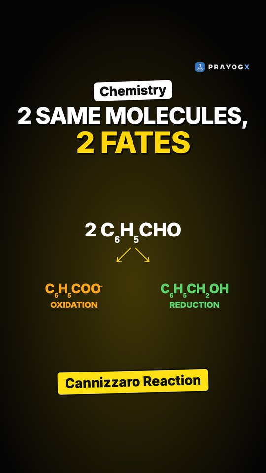
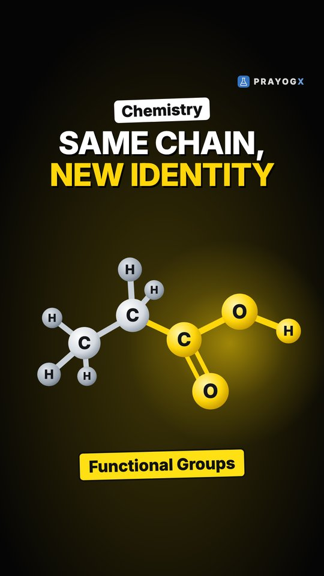
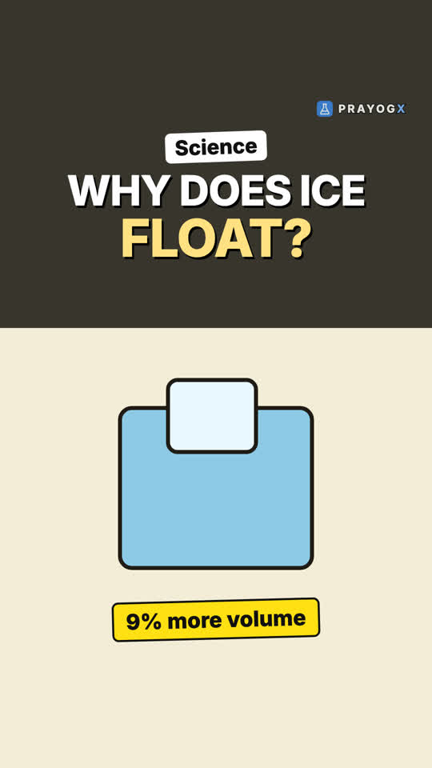
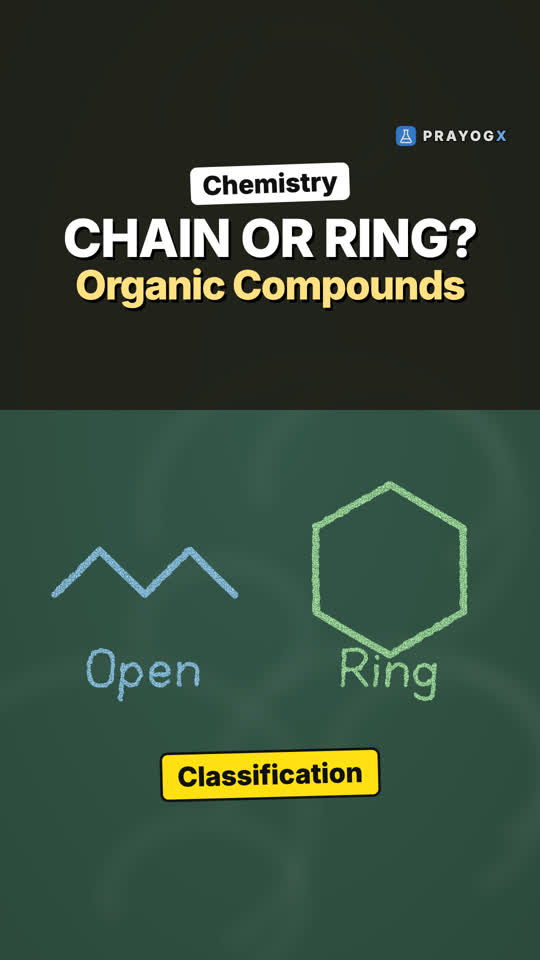
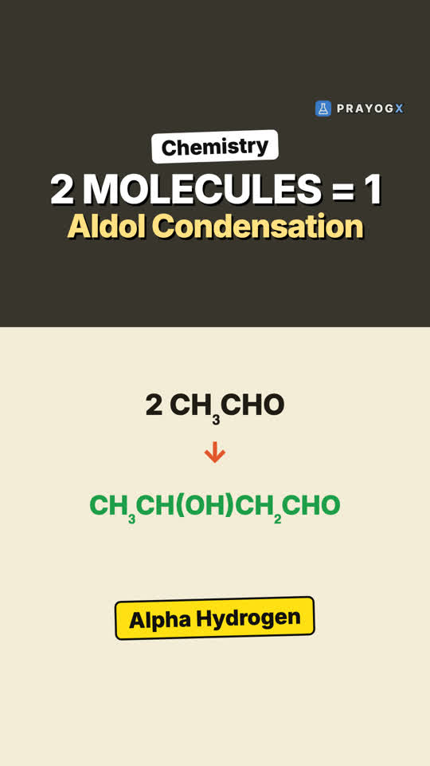
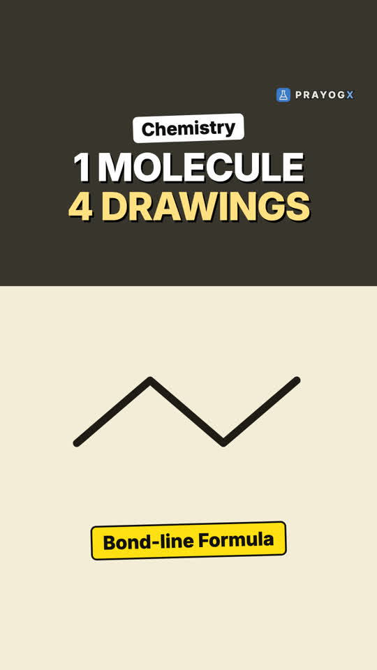

Choose your class
Every subject is laid out chapter by chapter. Each topic has a short Doodle video, notes you can download and a quick quiz.
Class 9Motion, matter, the cell and number systems: the foundations of school science and maths.ScienceMathematics21 videosClass 10Light, electricity, chemical reactions, life processes and the algebra and geometry of board year.ScienceMathematics9 videosClass 11Mechanics, thermodynamics, atomic structure, bonding, functions and the living world.PhysicsChemistryMathematicsBiology14 videosClass 12Electromagnetism, optics, modern physics, solutions and kinetics, calculus and genetics.PhysicsChemistryMathematicsBiology13 videosExtra / SupplementaryCurious questions beyond the syllabus: why the sky is blue, why we yawn, why 0.999… equals 1, and more.ScienceBiologyMathematics11 videos
Newest videos

The Cannizzaro ReactionTwo identical aldehyde molecules, two different products. How an aldehyde with no α-hydrogen, in concentrated alkali, is oxidised and reduced in the same reaction.Aldehydes, Ketones and Carboxylic Acids · Chemistry · simulation
Functional GroupsTwo molecules can share the same carbon chain and still behave differently. How one small group of atoms gives a compound its chemical identity: –OH, –CHO, C=O, –COOH and –NH₂.Organic Chemistry – Some Basic Principles and Techniques · Chemistry · simulation
Why Does Ice Float?Most solids sink in their own liquid, but ice floats. How open hexagons make ice less dense, and why that keeps lakes alive.Heat and matter · Physics · simulation
Classifying Organic CompoundsMillions of organic compounds, one first question: is the carbon chain open, or a ring? How to sort compounds into acyclic, alicyclic, aromatic and heterocyclic.Organic Chemistry – Some Basic Principles and Techniques · Chemistry · simulation
Aldol Condensation: The Alpha Hydrogen KeyTwo small ethanal molecules join into one bigger molecule. How the alpha hydrogen makes it happen, and which compounds cannot do it.Aldehydes, Ketones and Carboxylic Acids · Chemistry · simulation
Drawing Organic Molecules: Four WaysOne butane molecule, four ways to write it: complete, condensed, bond-line and 3D. How to read each, and how to count what a zigzag hides.Organic Chemistry – Some Basic Principles and Techniques · Chemistry · simulation